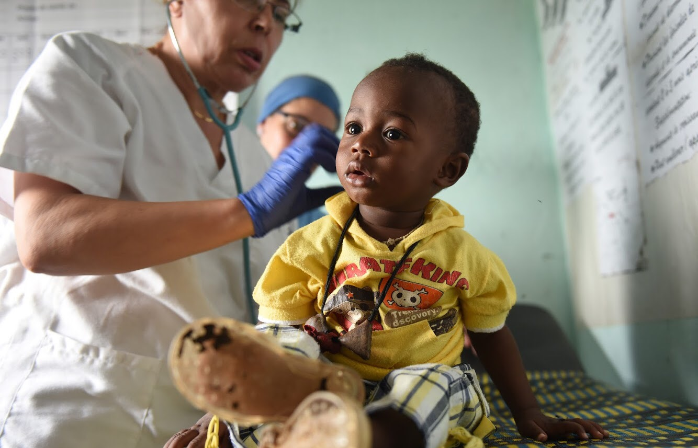

AYÚDANOS A VACUNAR EN ÁFRICA
TU PEQUEÑA APORTACIÓN SALVARÁ VIDAS

El mundo se halla inmerso en la pandemia de COVID-19. La OMS y sus asociados trabajan juntos en la respuesta siguiendo el rastro de la pandemia,
ofreciendo asesoramiento sobre las intervenciones más importantes, distribuyendo suministros médicos esenciales a los más necesitados y se han
lanzado a la carrera por encontrar una vacuna. Las vacunas salvan cada año millones de vidas. Su función es entrenar y preparar a las defensas
naturales del organismo el sistema inmunológico para detectar y combatir a los virus y las bacterias seleccionados.
Si el cuerpo se ve posteriormente expuesto a estos gérmenes patógenos, estará listo para destruirlos de inmediato, previniendo así la enfermedad.